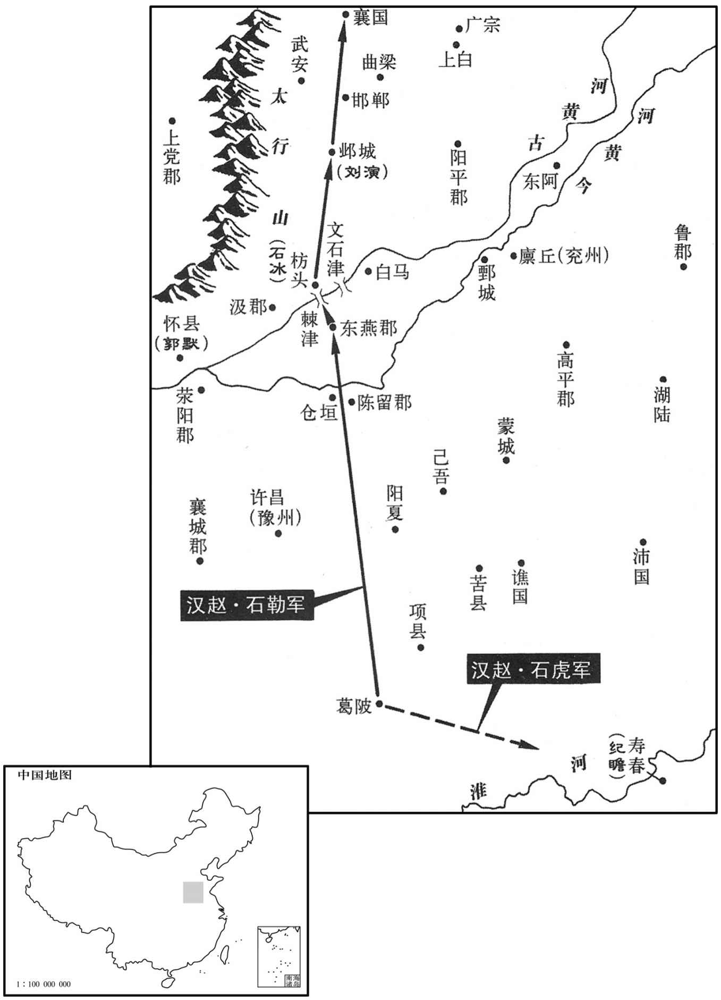
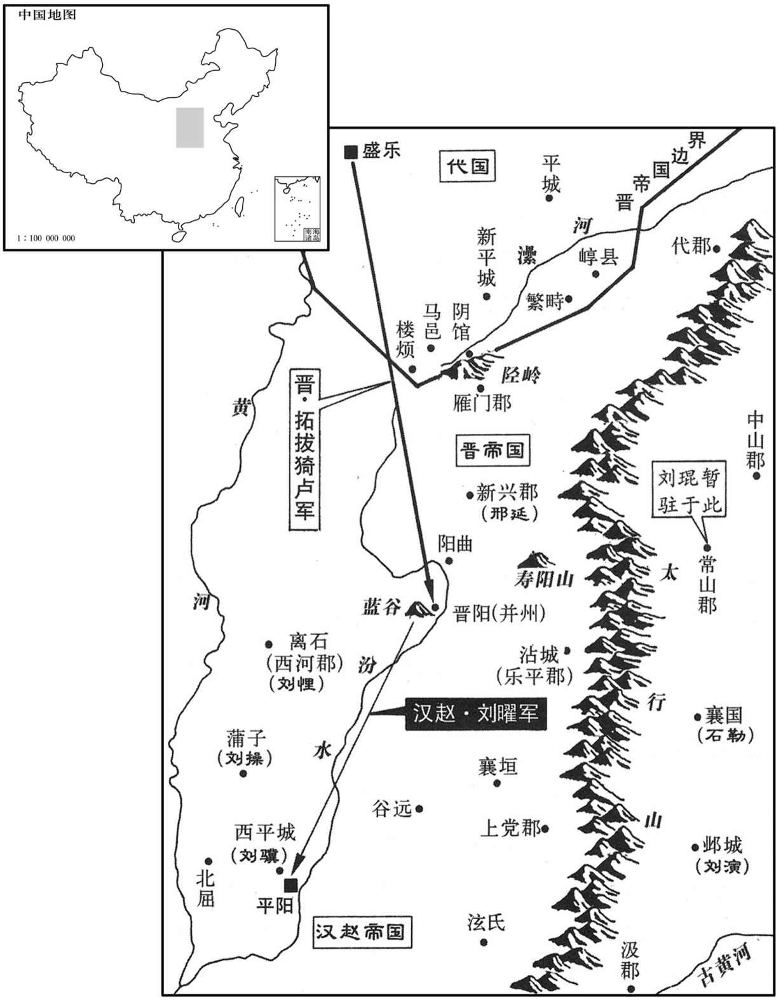

公元312年资治通鉴：本年记事、原文与白话对照
按原书编年位置阅读；追叙和史论不等于本年发生的事件。白话采用所据译本，缺译不以生成译文补齐。
卷88 · 本年记事
公元312年 · 晋孝怀皇帝永嘉六年
永嘉六年〔（壬申、三一二）〕
上传原文的注释括号有异常，字符原样保留；无法可靠划分的段落默认全文显示。
本年事件索引（现代整理）
- 汉呼延皇后去世，谥号武元
- 靳冲、卜珝进犯并州并围晋阳
- 刘聪纳刘殷女孙，后宫受宠而政事由宦官奏决
- 胡亢聚众竟陵，自称楚公
- 日食
- 石勒欲攻建业，司马睿集兵寿春讨之
- 石勒军遭饥疫，采张宾之计北据河北
- 石虎败于纪瞻，石勒结阵迫晋军退还
- 刘聪封晋怀帝为会稽郡公并以刘氏配之
- 拓跋猗卢救晋阳，刘聪诛败将靳冲
- 刘聪纳张寔二女为贵人
- 张轨听马鲂之议，遣军入关辅佐秦王
- 山简去世
- 刘聪封诸子为王
- 刘聪滥杀囚王彰，受太后群臣劝谏后赦之
- 赵固、王桑西渡，刘琨授二人刺史
- 贾疋等收复长安，刘粲攻陷傅祗所守三渚
- 张太后迫刘聪许立张徽光，刘英旋卒
- 刘殷去世，追述其委婉进谏及谦让自保
- 刘聪授诸王兵职，分镇离石、西平、蒲子
- 赵固归汉并追杀王桑，临深等转投刘演
- 石勒采张宾计夺船渡河，击败向冰进至邺
- 石勒听张宾之议，舍三台而进据襄国
- 石勒收冀州谷粮，受汉授四州都督及冀州牧
- 刘琨听信徐润谗言杀令狐盛
- 汉军袭取晋阳，令狐泥杀刘琨父母
- 刘粲、刘曜送晋臣至平阳，刘聪分别授官
- 梁芬自汉逃奔长安
- 贾疋等奉秦王司马业为太子，在长安建行台
- 张寔、宋配击破阻拒凉州军的裴苞
- 刘聪封诸子为王并调整公卿
- 拓跋猗卢大破汉军，助刘琨收复晋阳
- 刘琨迁阳曲招集亡散，卢谌逃归而家人被杀
- 刘聪立张氏为皇后
- 彭天护杀贾疋，麴允等攻逐阎鼎
- 石勒攻游纶、张豺，王浚遣段氏攻襄国
- 石勒设突门擒段末柸，击退段氏军
- 石勒厚礼放归段末柸，与段氏结盟
- 游纶、张豺降石勒，王象守信都被杀
- 疫病大作
- 王澄屡败于杜弢仍纵酒博弈，失去人心
- 王澄弃荆州赴召，周顗代任刺史
- 杜弢部袭沔阳，王敦遣陶侃等出兵讨之
- 王敦杀王澄，王机率众夺取广州
- 王如兵穷粮尽，投降王敦
- 顾荣、卫玠去世
- 张启杀王异代领益州，旋卒而众推向沈
- 姚弋仲率众迁榆眉，自称护羌校尉等职
春，正月，汉呼延后卒，谥曰武元。
春季，正月，汉呼延皇后去世，谥号为武元。
汉镇北将军靳冲、平忠将军卜珝寇并州；〔靳，居焮翻，姓也。珝，况羽翻。〕辛未，围晋阳。
汉镇北将军勒冲、平北将军卜进犯并州。辛未（十九日），包围晋阳。
甲戌，汉主聪以司空王育、尚书令任顗女为左、右昭仪，〔任，音壬。顗，鱼岂翻。〕中军大将王彰、中书监范隆、左仆射马景女皆为夫人，右仆射朱纪女为贵妃，皆金印紫绶。〔绶，音受。〕将纳太保刘殷女，戈弟乂固谏。聪以问太宰延年、太傅景，皆曰：「太保自云刘康公之后与陛下殊源，〔刘康公，周之卿士，食采于刘，其聪，匈奴之后，以汉之甥冒姓刘氏，故云殊源。〕纳何害！」聪悦，拜殷二女英、娥为左右贵嫔位在昭仪上〔嫔，毗宾翻。〕又纳殷女孙四人皆为人，位次贵妃。于是六刘之宠倾后宫，聪希复出外，〔复，扶又翻。〕事皆中黄门奏决。
甲戌（二十二日），汉主刘聪封司空王育和尚书令任的女儿为左、右昭仪，中军大将军王彰、中书监范隆、左仆射马景三人的女儿都为夫人，右仆射朱纪的女儿为贵妃，都授予金印章和紫色绶带。刘聪打算纳娶太保刘殷的女儿，太弟刘苦苦劝谏。刘聪就此事询问太宰刘延年、太傅刘景，他们都说：“太保刘殷自称是周代刘康公的后代，与陛下不是一个族源，娶她有什么妨害？”刘聪很高兴，封刘殷的两个女儿刘英、刘娥为左、右贵嫔，地位在昭仪之上。又纳娶刘殷的四个孙女都当作贵人，地位低于贵妃。这样六刘所受的宠爱占满后宫，刘聪很少再出门到外面，政事都由宦宫中黄门传达。
故新野王歆、牙门将胡亢聚众于竟陵，〔亢，音刚。〕自号楚公，寇掠荆土，以歆南蛮司马野杜曾为竟陵太守。曾勇冠三军，能被甲游于水中，〔为曾乱荆州张本。冠，古玩翻被，皮义翻。〕
已故新野王司马歆的牙门将胡亢在竟陵聚众，自称楚公，在荆州的土地上抢掠，任司马歆的南蛮司马新野人杜曾为竟陵太守。杜曾骁勇为三军第一，能身穿铠甲在水中游泳。
二月，壬子朔，日有食之。
二月，壬子朔（初一），出现日食。
石勒筑垒于陂，〔皇：汝南郡鲖阳县有葛陂。贤曰：葛陂，在今豫州新蔡县西北。〕课农造舟，将建业。琅邪王睿大集江南之众于寿春，以镇东长史纪瞻为扬威将军，都督诸军以讨之。〔睿镇东大将军，署瞻长史。〕
石勒在葛陂修筑营垒，向农民征税修造舟船，打算进攻建业。琅邪王司马睿大规模调集江南的部队到寿春，任镇东长史纪瞻为扬威将军，统领各军队来征讨石勒。
会大雨，三月不止，勒军中饥疫，死者太半，闻晋军将至，集将佐议之。右长史刁膺先送款于睿，求扫平河朔以自赎，俟其军退，徐更图之，勒愀然长啸。〔愀，子小翻。〕中坚将夔安请就高避水，〔中坚将军，盖石勒所置。姓谱：夔姓，春秋夔子之后。〕勒曰：「将军何怯邪！」孔苌三十余将请各将兵分道夜攻寿春，斩吴将头，据其城，食其粟，要以今年破丹阳，定江南勒笑曰：「是勇将之计也！」〔言其不逆计胜败，但勇于赴敌耳。将，即亮翻。〕各赐铠马一疋。〔铠，可亥翻。疋，僻吉翻。〕顾谓张宾曰：「于君意何如﹖」宾曰：「将军攻陷京师，囚执天子，杀害王公，妻妃主，擢将军之发，不足以数将军之罪，〔擢，拔也；拔其发以数其罪犹不足，言其罪多也。数，所具翻。〕柰复相臣奉乎！〔复，扶又翻。〕去年既杀王弥，不当来此；今天降霖雨于数百里中，示将军不应此也。邺有三台之固，〔水经注：邺城西北有三台，皆因城为之基，汉建安十五年魏武所起。中日铜台，高十丈，其石虎更增二丈；南则金雀台，高八丈；北则冰井台，亦高八丈。〕西接平阳，〔谓近汉近汉都，可以壮声援。〕山河四塞，北徙据之，以经营河北，河北既定，天下无处将军之右者矣。〔处，昌吕翻。〕晋之保寿春，畏将往攻之耳；彼闻吾去，喜于自全，何暇追袭吾后，为吾不利邪！〔自古国于东南，率多为自保之计，自量其力之不足以进也，宾料之审矣。〕将军宜使辎重从北道先发，将军引大兵向寿春。辎重既远，〔重，直用翻。〕大兵徐还，何忧进退无地乎！」勒攘袂鼓迁曰：「张君计是也！」责刁膺曰：「君相辅佐，当共成大功，柰何遽劝孙降！〔降，户江翻。〕此策应斩！肋素知君怯，特相宥耳。」于黜膺为将军，擢宾为右长史，号曰「右侯」。
遇到大雨，三个月不停，石勒军队饥乏并流行疾病，死的人超过大半，又听到晋朝军队将要开来，就召集武将及参佐商议。右长史刁膺请石勒先向司马睿求和，请求扫平河朔来赎自己的罪，等到司马睿的军队退还江南，再慢慢谋取他。石勒听后忧伤地大声发出长叹。中坚将军夔安请石勒到地势高的地方避水，石勒说：“将军你为什么胆怯呢？”孔苌等三十多个武将请求各自带兵分路夜袭寿春，斩掉吴地武将的头颅，占据他们的城邑，吃他们的粮食，想就在今年攻下丹阳、平定江南。石勒笑着说：“这真是勇将的计策啊！”各赐他们铠甲一副、马一匹。石勒对张宾说：“依您看怎么办呢？”张宾说：“将军您攻陷京城，囚禁了晋朝天子，杀害亲王公卿大臣，侵占凌辱晋朝的嫔妃公主，拔下您的头发，也不够来数将军您的罪过。怎么能再以臣下的身分尊奉晋朝呢？去年杀了王弥，就不应该到这里来。现在，几百里内上天不断地降雨，这是告诉将军您不应该在这里逗留了。邺城有三个高台防守坚固，西临汉 都城平阳，隔山阻河四面都有要塞，应当向北迁徙占据那里，
经营黄河以北地区。河北地区稳定后，全国就没有处在将军您上面的人。晋朝保卫寿春，只是害怕您去攻打寿春罢了。他们听说我们离去了，对能够自己保全而感到高兴满足，还有什么功夫追击我军的后部，施行不利于我军的行动呢？您应当派辎重队伍从北面的道路先行出发，您带领大部军队开往寿春。辎重队伍走远后，大部军队再缓慢回撤，还忧虑什么进退无路的呢？”石勒捋起衣袖抚动髯须说：“张君的计策好啊！”又责备刁膺说：“您既然作我的辅佐，就应当共同成就大功业，怎么能催促劝说我投降呢？出这个计策的应当杀头！但我平素了解您胆怯怕事，特地原谅您罢了。”于是把刁膺贬黜为将军，提拔张宾为右长史。号称“右侯”。
勒引兵发葛陂，遣石虎帅骑二千向寿春，〔帅，读曰率。骑奇寄翻。〕遇晋运船，虎将一争取之为纪瞻所败。〔败，补迈翻。〕瞻追奔百里，前及勒军，勒结陈待之；〔陈，读曰阵。〕瞻不敢击，退还春。
石勒带兵从葛陂出发，派石虎带领二千骑兵开往寿春，遇到晋朝的运输船，石虎的部将兵士争先攻取，结果被纪瞻打败。纪瞻追击了一百多里，追上石勒的军队，石勒排好兵阵等待，而纪瞻不敢攻打，退还到寿春。
汉主聪封帝为会稽郡公，〔会，工名翻。〕加仪同三司。聪从容谓帝曰：「卿昔为豫章王，与王武子造卿，武子称朕于卿，〔从，千容翻。王济，字武子。造，七到翻。〕卿言闻其名久矣，赠朕柘银研；〔研，与砚同。卿颇记否﹖」帝曰：「臣安敢忘之！但恨尔日不早识龙颜！」聪曰：「卿骨肉何相残如此﹖」帝曰：「大汉将应天受命，故为陛下自相驱除，〔为，于伪翻。〕此殆天意，人事！且臣家若能奉武皇帝之业，九族敦睦，陛下何由得之！」聪喜，以小刘贵人妻帝，〔妻，七细翻。〕曰：「此名公之孙也，卿善遇之。」
两版字句有差异，建议核对原文。
汉主刘聪封晋怀帝为会稽郡公，开府仪同三司。刘聪和颜悦色地对怀帝说：“你过去当豫章王，我与王武子拜访你，王武子向你称赞我，你说久闻大名，送给我柘木良弓和银砚台，你还记得吗？”怀帝说：“臣下我怎么敢忘掉呢？只遗憾当时没有及早地认识龙颜！”刘聪说：“你家的亲骨肉为什么这样互相残杀？”怀帝说：“大汉将要承接天意，所以自相驱赶杀戮替陛下扫清道路，这是天意，不是人所能决定的！再说我家如果能尊奉武皇帝的大业，九族和睦相处，陛下从哪里得到天下呢？”刘聪听得高兴，把小刘贵人给了怀帝作妻子，说：“这是名公爵的孙女，你好好对待她。”
代公猗卢遣兵救晋阳，三月，乙未，汉兵败走。卜珝之卒先奔，靳冲擅收珝，斩之；聪大怒，遣使持节斩冲。〔使，疏吏翻。〕
代公拓跋猗卢派兵救援晋阳，三月，乙未（十四日），汉军队败退而逃。卜带领部众先逃跑，勒冲擅自拘捕了卜，把他杀了。刘聪勃然大怒，派使者拿着符节杀了勒冲。
聪纳其舅子辅汉将军张寔二女徽光、丽光为贵人，〔此别一张寔，非河西张轨之子。〕太后张氏之意也。〔张氏，渊之侧室，生聪，尊为太后。〕
刘聪纳娶他舅舅的儿子辅汉将军张的两个女儿张徽光、张丽光为贵人 ，这是太后张氏的主意。
凉州主簿马鲂说张轨：〔鲂，符方翻。说，输芮翻。〕「宜命将出师，翼戴帝室。」轨从之，驰檄中关中，共尊辅秦于；且言「今遣前锋督护宋配、帅步骑二万，径趋长安；〔帅，读曰率。趋，七喻翻。〕西中郎将寔帅中军三万，武威太守张琠帅胡骑二万，络绎继发。」〔琠，他典翻。络绎，相继不绝之意。〕
凉州主簿马鲂对张轨说：“应当让武将出征，以辅助拥戴朝廷。”张轨接受了这个建议，急速将檄文传布关中地区，号召共同尊奉辅佐秦王司马业。并且说：“现在派遣前锋督护宋配率领二万步兵和骑兵，直接奔赴长安，西中郎将张带领中军三万军队，武威太守张率领二万胡人骑兵，陆续出发 。”
夏，四月，丙寅，征南将军山简卒。
夏季，四月，丙寅（十六日），征南将军山简去世。
汉主聪封其子敷为渤海王，骥为济南王，鸶为燕王，鸿为楚王，劢为齐王，〔劢，音迈。〕权为秦王，操为魏王，持为赵王。
汉主刘聪封他的儿子刘敷为渤海王，刘骥为济南王，刘鸾为燕王，刘鸿为楚王，刘劢为齐王，刘权为秦王，刘操为魏王，刘持为赵王。
聪以鱼蟹不供，斩左都水使者襄陵王摅；〔襄陵县，汉属河东郡，晋属平阳郡。观后所谓亟斩王公，则摅亦刘氏也。摅，抽居翻。〕作温明、徽光二殿未成，斩将作大匠望都公靳陵。观渔于汾水，昏夜不归。中军大将军王彰谏曰：「比观陛下所为，臣实痛心疾首。〔比，毗至翻。〕今愚民归汉之志未专，思晋之心犹盛，刘琨咫尺，刺客纵横；〔谓平阳去晋阳不远也。纵，子容翻。〕帝王轻出，一夫敌耳。愿陛下改往修来，则亿兆幸甚！」聪大怒，命斩之；王夫人叩头乞哀，乃囚之。〔王夫人，彰女也。〕太后张氏以聪刑罚过差，三日不食；太弟乂、单于粲舆榇切谏。聪怒曰：「吾岂桀、纣，而汝辈生来哭人！」太宰延年、太保殷等公卿、列侯百余人，皆免冠涕泣曰：「陛下功高德厚，旷世少比，〔少，诗沼翻。〕往也唐、虞，今则陛下。而顷来以卜□□□□亟斩王公；直言忤旨，遽囚大将。〔王公，谓刘摅、靳陵；大将，谓王彰。亟，欺冀翻。忤，五故翻。〕此臣等窃所未解，〔解，户买翻，晓也。〕故相与忧之，忘寝与食。」聪慨然曰：「朕昨大醉，非其本心，微公等言之，朕不闻过。」各赐帛百匹，使侍中持节赦彰曰：「先帝赖君如左右手，君着勋再世，朕敢忘之！此段之过，希君荡然。君能尽怀忧国，朕所望也。今进君騕骑将军、定襄邵公，〔騕，匹妙翻。〕后有不逮，幸数匡之！」〔数，所角翻。〕
刘聪因为鱼蟹供应不上，杀死左都水使者襄陵王刘摅。温明、徽光二座宫殿没有建成，杀死将作大匠望都公靳陵。他到汾水观看捕鱼，黄昏黑夜都不返回。中军大将军王彰劝谏说：“近来看到陛下的行动，我实在是痛心疾首。现在愚民们归附汉的心意并不确定，而思念晋朝的心情还非常浓厚，刘琨虎视眈眈近在咫尺，刺客到处都有 。帝王轻率地出行，一个人就能把您刺杀。希望陛下改变过去的作法养成新的习惯，那么百性感到非常幸运！”刘聪勃然大怒，命令杀他，王彰的女儿王夫人在一旁叩头乞求宽恕，于是把王彰囚禁起来。太后张氏因为刘聪的刑罚过于严苛，三天不吃饭。太弟刘义，单于刘粲带着棺材冒死恳切地劝谏。刘聪怒冲冲地说：“我难道是暴君桀、纣吗？你们却来哭活人！”太宰刘延年、太保刘殷等公卿大臣列侯一百多人，都摘去头冠哭着说：“陛下功高德厚，从古到今很少有人能与您相比，古代有唐尧、虞舜，今天则是陛下。但近来因为物资稍微供应不上。就杀王公，直言冒犯您的旨意，就马上囚禁大将。这是我们心里所不理解的，所以大家都对此感到忧虑，乃至废寝忘食。”刘聪慨叹说：”朕昨天大醉，这些事不是我的本意，不是你们说起，朕就听不到自己的过失了。”每人赐百匹布帛，派侍中拿着符节赦免王彰说：“先帝刘渊依靠您如同左右手一样，您立下的再世之功，朕怎敢记掉？这次的过失，希望您不要放在心上。您能够尽心忧国，正是朕所希望的。现在提升您为骠骑将军，封定襄郡公。朕将来再有做得不尽如人意的地方，还希望您多多指正。”
王弥既死，〔事见上卷上年。〕汉安北将军赵固、平北将军王桑恐为石勒所并，欲引兵归平阳，军中乏粮，士卒相食，乃自禅硗津西渡。〔禅，丘交翻。硗，牛交翻。〕刘〔【章：甲十一行本「刘」上有「攻掠河北郡县」交字；乙十一行本同；孔本同；张校同；退斋校同。】〕琨以兄子演为魏郡太守，镇邺，〔【章：甲十一行本「邺」下有「固」字；乙十一行本同；孔本同；张校同；退斋校同。】〕桑恐演邀之，遣长史临深为质于琨。〔姓谱；临姓，大临之后。质，音致。〕琨以固为雍州刺史，〔雍，于用翻；下同。〕桑为豫州刺史。
王弥死后，汉安北将军赵固、平北将军王桑担心自己的军队被石勒吞 并，想带兵返回平阳。军中缺少粮食，士卒竟互相宰食。于是从硗津西渡黄河，进攻抢掠黄河以北的郡县。刘琨任哥哥的儿子刘演为魏郡太守，镇守邺城，王桑害怕刘演阻击，就派长史临深到刘琨处作为人质。刘琨就任赵固为雍州刺史，王桑为豫州刺史。
贾疋等围长安数月，汉中山王曜连战皆败，驱掠士女八万余口，奔于平阳。秦王业自雍入于长安。〔雍，于用翻。〕五月，汉王聪贬曜为龙骧大将军，行本司马。〔骧，思将翻。〕聪使河内王粲攻傅祗于三渚，〔据祗传，祗屯盟津小城。盟津河平侯祠有二渚，又有淘渚，故亦曰三渚。〕右将军刘参攻郭默于怀，会祗病薨，城陷，粲迁祗子孙并其士民二万余户于平阳。
贾疋等人包围长安几个月，汉中山王刘曜接连出战都失败了，强行驱赶八万多成年男女逃奔平阳。秦王司马业从雍州进入长安。五月，汉主刘聪把刘曜贬为龙骧大将军，行大司马。刘聪派河内王刘粲在三渚攻打傅祗，派右将军刘参到怀县攻打郭默。正遇上傅祗因病去世，三渚城陷落，刘粲把傅祗的子孙以及士人百姓二万余户都迁往平阳。
六月，汉主聪欲立贵嫔刘英为皇后；张太后欲立贵人张徽光，聪不得已，许之。英寻卒。
六月，汉主刘聪打算立贵嫔刘英为皇后，而张太后要立贵人张徽光，刘聪没办法，只好同意。刘英不久就去世了。
汉大昌文献公刘殷卒。〔宋白曰：隰州隰川县，汉蒲子县；刘渊僭乱，置大昌郡。〔殷为相，不犯颜忤旨，〔忤，五故翻。〕然因事进规，补益甚多。汉主聪每与群臣议攻事，殷无所是非；群臣出，殷独留，为聪敷畅条理，商榷事宜，〔商，度也；榷者，举其略也。为，于伪翻。榷，古岳翻。〕聪未尝不从之。殷常戒子孙曰：「事君当务几谏。凡人尚不可面斥其过，况万乘乎！夫几谏之功，无异犯颜，但不彰君之过，所以为优耳。〔几谏者，见微也。侯希圣曰：事君，有显谏者，有几谏者。然而温柔忠厚者，其说多行，讦直强劲者，其说多忤，夫是以贵几谏也。几，居希翻。乘，绳证翻。〕官至侍中、太保、录尚书，赐剑履上殿、入朝不趋、乘舆入殿。然殷在公卿间，常恂恂有卑让之色，故能处骄暴之国，保其富贵，不失令名，以寿考自终。〔处，昌吕翻。〕
汉大昌文献公刘殷去世。刘殷当丞相，从不冒犯皇帝违反圣旨，但经常就具体的事情进宫规劝，对刘聪补益很多。汉主刘聪每次与大臣们商议政事，刘殷都不表示什么态度，等大臣们离开，刘殷单独留下，为刘聪对所议铺陈发挥再理出头绪，商讨事宜，刘聪从没有不采纳他的建议的。刘殷常常告诫子孙说：“为君主作事应当务求对君主委婉地劝谏。凡人尚且不能当面斥责他的过错，更何况皇帝呢 ？委婉劝谏的功效，其实与冒犯君主没有什么区别，只是不明说君主的过失，所以是比较好的方法。”刘殷历任侍中、太保、录尚书等职，并被赐予可以佩剑穿鞋上宫殿、朝见天子不用快步行走、乘车进入宫殿等特权。但是刘殷在公卿大臣中，常常恭顺地带有卑谦礼让的神色，所以处在骄纵横暴的国家，能够保全自己的富贵，不损伤自己的美好声名，以长寿善终。
汉主聪以河间王易为车骑将军，彭城王翼为卫将军，并典兵宿卫。高平王悝为征南将军，镇离石；〔悝，若回翻。〕济南王骥为征西将军，筑西平城以居之；〔西平城，当筑于平阳西。济，子礼翻。〕魏王操为征东将军，镇蒲子。
汉主刘聪任河间王刘易为车骑将军，彭城王刘翼为卫将军，共同统领皇宫禁卫军。任高平王刘悝为征南将军，镇守离石；济南王刘骥为征西将军，建筑西平城居住；魏王刘操为征东将军，镇守蒲子。
赵固、王桑自怀求迎汉，汉主聪遣镇远将军梁伏疵将兵迎之。未至，长史临深、将军牟穆帅众一万叛归刘演。固随疵而西，〔疵，疾移翻。帅，读曰率；下同。〕桑引兵众东奔青州，固遣兵追杀之于曲梁，〔曲梁县，属广平郡；曹魏置广平郡，治曲梁城。刘昫曰：唐洺州永年县，汉曲梁县地也。〕桑将张凤帅其余众归演。聪以固为荆州刺史、领河南太守，镇洛阳。
赵固、王桑从怀县向汉请求接应，汉主刘聪派镇远将军梁伏疵带兵迎接他们。迎接的军队还没有到达时，长史临深、将军牟穆带领一万军队反叛投归刘演。赵固随梁伏疵向西边进发，王桑却又带领所属军队向东奔赴青州，赵固就派兵追击，在曲梁杀了王桑。王桑的部将张凤带领残余部众投归刘演。刘聪让赵固担任荆州刺史，兼河南太守，镇守洛阳。
石勒自葛陂北行，所过皆坚壁清野，虏凉无所获，军中饥甚，士卒相食。至东燕，〔据水经：东燕城在酸枣县东。河水自酸枣东北过延津，又径东燕县故城北。余考两汉志，东郡有燕县，无东芜县，其即是欤﹖魏收地形志，东燕县，晋属濮阳国。贤曰：东燕故城，今滑州胙城县。燕，于贤翻。〕闻汲郡向冰聚众数千壁枋头，〔水经：淇水至黎阳入河，在遮害亭西十八里。汉建安九年，魏武于水口下大枋木以成堰，遏淇水东入白沟，以通漕运故时人号其处曰枋头。杜佑曰：枋头在今汲郡卫县界。宋白曰：枋头城，在令卫县南，去河八里。向，式亮翻，姓也。枋，音方。〕勒将济河，恐冰邀之。张宾曰：「闻冰船尽在渎中未上，〔未上者，未上岸。船不用，则推之登陆，使远水而燥，他日轻，便于驾用。上，时掌翻。〕宜遣轻兵间道袭取，以济大军，〔间，古苋翻。〕大军既济，冰必可擒也。」秋，七月，勒使支雄、孔苌自文石津缚筏潜渡，取其船勒引兵自棘津济河，水经：河水径东燕县故城北，河水于是有棘津之名。〕击冰，大破之，尽得其资储，军势复振，遂长驱至邺。刘演保二台以自固，临深、牟穆等复帅其众降于勒。〔复，扶又翻；帅，读曰率；并下同。降，户江翻；下同。〕
石勒从葛陂向北行进。所经过的地方百姓都坚壁清野，因而没有抢掠到什么东西，军中非常饥饿，出现士卒吃士卒充饥的现象。到达东燕，听说汲郡人向冰聚集了几千人在枋头修筑了营垒，石勒将要渡黄河，又担心遭到向冰的阻击。张宾说：“听说向冰的船只全都放在水中没有抬上岸，应当派遣轻装兵士抄小道去偷袭夺取这些船，用来渡大部军队过黄河，大部军队渡河后，一定能擒获向冰。”秋季，七月，石勒派遣支雄、孔苌从文石津绑扎木筏偷渡，夺取了向冰的船只。石勒率兵从棘津渡黄河，攻打向冰，把向冰打得惨败，得到了向冰的全部物资储备，军队士气重新振作起来，于是长驱直入到达邺城。刘演防守三台以求自己稳固，临深、牟穆等人又率领自己的部众向石勒投降。

诸将欲攻三台，张宾曰：「演虽弱，众犹数千，三台险固，攻之未易猝拔，〔易，以豉翻。〕拾而云之，彼将自溃。方今王彭祖、刘越石，公之大敌也，〔王浚，字彭祖；刘琨，字越石。〕宜先取之，演不足顾也。且天下饥乱，明公虽拥大兵，游行羁旅，人无定志，非所以保万全，制四方也。不若择便地而据之，广聚粮储，西禀平阳以图幽、并，〔幽，王浚；并，刘琨。〕此霸王之业也。邯郸、襄国，形胜之地，〔邯郸县，汉属赵国，晋属广平。襄国县，秦为信都，项羽改曰襄国，汉属赵国，晋属广平。而信都别为县，前汉属信都国，后汉属安平国。邯郸，音寒丹。宋白曰：隋改襄国为龙冈县，唐为邢州所治也。〕请择一而都之。」勒曰：「右侯之计是也！」遂进据襄国。
遂进据襄国。
部将们想攻打三台，张宾对石勒说：“刘演虽然兵力微弱，但还有几千军队，三台险峻坚固，攻打不容易很快把它拿下，放弃它而离开，那里将会自己崩溃。现在王浚、刘琨是您的主要敌人，应当先打他们，刘演不值得注意。再说天下饥饿动乱，您虽然拥有强大的军队，但来回行军长期在旅途中，人心不定，这不是控制四方的万全之计。不如选择一个便利的地方占据它，多多聚集储备粮食，尊奉平阳以谋取幽州、并州，这是霸王的功业。邯郸、襄国，都是好地方，请选一个作为都城。”石勒说：“您的计策是对的！”于是进发占据了襄国。
宾复言于勒曰：「今吾居此，彭祖、越石所深忌也，恐城堑未固，资储未广，二寇戭至。〔堑，七艳翻。〕宜亟收野谷，且遣使至平阳，具陈镇此之意。」〔使，疏吏翻；下同。〕勒从之，分命诸将攻冀州，郡县壁垒多降，运其谷以输襄国；且表于汉主聪，聪以勒为都督冀、幽、并、营四州诸军事、〔营州不在晋太康地志十九州岛之数。晋地理志：咸宁二年，分昌黎、辽东、玄菟、带方、桨浪等郡国五，置平州；至慕容熙据和龙，始于宿军置营，以刺史镇之；拓跋魏置营州于和龙。勒时未有营州也。郡国志：营州地当营室分，故曰营州。〕冀州牧，进封上党公。
张宾又对石勒说：“现在我们驻扎在这里，是王浚、刘琨深深忌惮的。我担心城墙堑壕还不坚固，物资储备还不充分时，他们二人交相率兵来了。应当迅速收取野外的粮食，并且派使者到平阳，一一说明我们镇守此地的意图。”石勒听取了这个建议，分别命令诸将攻打冀州，那里的郡、县、营垒大多投降，就把这些地方的粮谷运往襄国。并且表奏汉主刘聪，刘聪让石勒担任都督冀、幽、并、营四州诸军事，冀州牧，进封为上党公。
刘琨移檄州郡，期以十月会平阳，击汉。琨素奢豪，喜声色。〔喜，许记翻。〕河南徐润以音律得幸于琨，琨以为晋阳令。润骄恣，干预政事；护军令狐盛数以为言，〔令狐之令，力丁翻。数，所角翻。〕且劝琨杀之，琨不从。润谮盛于琨，琨数盛，杀之。琨母曰：「汝不能驾御豪杰以恢远略，而专除胜己，祸必及我。」
刘琨向各州郡发布檄文，约定十月在平阳会合，攻打汉。刘琨平素奢侈豪华，喜欢音乐女色。河南人徐润因为擅长音律而受到刘琨的宠信，刘琨让他担任晋阳令。徐润骄纵放肆，经常干预政事。护军令狐盛多次对此向刘琨发表看法，并且劝刘琨把他杀了。刘琨不听。结果徐润向刘琨说令狐盛的坏话，刘琨就拘捕了令狐盛，把他杀了。刘琨的母亲说：“你不能组织驾驭英雄豪杰来完成宏大的谋略，而只知一心清除超过自己的人，这带来的灾祸一定会殃及我。”
盛子泥奔汉，具言虚实。汉主聪大喜，遣河内王粲、中山王曜将兵寇并州，以令狐泥为乡导。〔乡，读曰向。〕琨闻之，东出，收兵于常山及中山，使其将郝诜、张乔将兵拒粲，〔郝，呼各翻。〕且遣使求救于代公猗卢。诜、乔俱败死。粲、曜乘虚袭晋阳，太原太守高乔、并州别驾郝聿以晋阳降汉。〔考异曰：刘琨传曰：「属庞醇降于聪，鴈门乌丸复反，琨亲出御之，粲乘虚袭取晋阳。」按：琨上太子笺曰：「聪以七月十六日复决计送死，臣即自东下，率中山、常山之卒，并合乐平、上党诸军，未旋之间，而晋阳倾溃。十六国春秋亦云「琨收兵常山」。本传误也。〕八月，庚戌，琨还救晋阳，不及，帅右数十骑奔常山。辛亥粲、曜入晋阳。壬子，令狐泥杀琨父母。
令狐盛的儿子令狐泥投奔到汉，全部陈说刘琨的虚实情况。汉主刘聪大喜过望，派遣河内王刘粲、中山王刘曜率兵进犯并州，让令狐泥担任向导。刘琨听说后，向东在常山及中山聚集军队，派部将郝诜、张乔带兵阻击刘粲，并且派使者向代公拓跋猗卢请求救援。郝诜、张乔都兵败而死。刘粲、刘曜乘虚袭击晋阳，太原太守高乔、并州别驾郝聿献出晋阳向汉投降。八月，庚戌（初一），刘琨返回来救晋阳，没来得及，只好带领左右随从几十人骑马逃奔常山。辛亥（初二），刘粲、刘曜进入晋阳。壬子（初三），令狐泥把刘琨的父母都杀了。
粲、曜送尚书卢志、侍中许遐、太子右卫率崔玮于平阳。聪复以曜为车骑大将军，以前将军刘丰为并州刺史，镇晋阳。九月，聪以卢志为太弟太师，崔玮为太傅，许遐为太保，高乔、令狐泥皆为武卫将军。
刘粲、刘曜把晋朝尚书卢志、侍中许遐、太子右卫率崔玮送到平阳。刘聪又以刘曜担任车骑大将军，以前将军刘丰任并州刺史，镇守晋阳。九月，刘聪任卢志为太弟太师，任崔玮为太傅，许遐为太保，高乔、令狐泥都担任武卫将军。
已卯，汉卫尉梁芬奔长安。
己卯（疑误），汉的卫尉梁芬逃奔长安。
辛巳，贾疋等奉秦王业为皇太子，〔考异曰：怀帝纪云：「贾疋讨刘粲于三辅，走之，关中小定，奉秦王为太子。」按：贾疋等以永嘉五年攻刘粲于新丰，粲败，还平阳；奉秦王入雍城。六年三月，刘曜弃长安走，秦王入长安，汉兵皆已退矣。秦王为太子时，刘粲方在晋阳。怀纪误。〕建行台于长安，登坛告类，〔告类，或摄，或即位，祭天之礼。舜之摄也，肆类于上帝。孔安国注曰：类，谓摄位事类，遂以摄告天及五帝，汤黜夏命，昭告于上天神后，皆其事也。〕建宗庙、社稷，大赦。以阎鼎为太子詹事，总摄百揆；〔天子詹事统摄宫僚。时太子建行台，故以詹事总百揆，特位号未正，其实丞相之职也。〕加贾疋征西大将军，以奉州刺史、南阳王保为大司马。命司空荀藩督摄远近，光禄大夫荀组领司隶校尉、行豫州刺史，与藩共保开封。〔开封县，汉属河南郡，晋属荥阳郡。〕
辛巳（初三），贾疋等尊奉秦王司马业为皇太子，在长安建立行台，登祭坛祭天。设置宗庙、社稷，实行大赦。任阎鼎为太子詹事，代理统领文武百官。任命贾疋为征西大将军，秦州刺史、南阳王司马保为大司马。让司空荀藩督领远近的事务，光禄大夫荀组兼任司隶校尉、豫州刺史，与荀藩共同守卫开封。
秦州刺史裴苞据险以拒凉州兵，张寔、宋配等击破之，苟奔柔〔【严：「柔」改「桑」。】〕凶坞。
秦州刺史裴苞占据险要之地来抵御凉州的军队。张、宋配等人打败了他，裴苞逃奔柔凶坞。
冬，十月，汉主聪封其子恒为代王，〔恒，户登翻。〕逞为吴王，朗为颍川王，皋为零陵王，旭为丹阳王，京为蜀王，坦为九江王，晃为临川王；以王育为太保，王彰为太保，王彰为太尉任顗为司徒，〔顗，鱼岂翻。〕马景为司空，朱纪为尚书令，范隆为左仆射，呼延晏为右仆射。
冬季，十月，汉主刘聪封自己的儿子刘恒为代王，刘逞为吴王，刘朗为颍川王，刘皋为零陵王，刘旭为丹阳王，刘京为蜀王，刘坦为九江王，刘晃为临川王。任王育为太保、王彰为太尉，任为司徒，马景为司空，朱纪为尚书令，范隆为左仆射，呼延晏为右仆射。
代公猗卢遣其子六修及兄子普根、将军卫雄、范班、箕澹帅众数万为前锋以攻晋阳，〔澹，徒览翻，又徒滥翻。考异曰：十六国春秋云「遣其子利、孙宥六须」，载记云「宾六须」。刘琨集云「左、右贤王」，又云「右贤王扑速根」。今从后魏书。考异又曰：「箕澹」，十六国春秋、后魏书作「姬澹」。今从刘琨传。〕猗卢自帅众二十万继之，刘琨收散卒数千为之乡导。〔乡，读曰向。〕六修与汉中山王曜战于汾东，曜兵败，坠马中七创。〔中，竹仲翻。创，初良翻；下同。〕讨虏将军傅虎以马曜，曜不受，曰：「卿当乘以自免吾创已重，自分死此。」〔分，扶问翻。〕虎曰：「虎蒙大王识拔至此，常思效命，令其时矣。且汉室初基，天下可无虎，不可无大王也！」乃扶曜上马，驱令渡汾，自还战死。曜入晋阳，夜与大将军粲、镇忠大将军丰掠晋阳之民，踰蒙山而归。〔五代志，太原郡石艾县有蒙山。魏收曰：石艾县，即汉、即汉、晋之上艾县也。晋志，上艾县，属桨平郡。又据五代志，晋阳县有蒙山。此盖蒙山跨晋阳、石艾二县界也。十月月，猗卢追之，战于蓝谷，〔蓝谷，在蒙山西南。〕汉兵大败，擒刘丰，斩邢延等三千余级，〔邢延叛琨见上卷五。〕伏尸数百里。猗卢因大卢因人猎寿阳山，〔寿阳山，在乐平寿阳县，魏收地形志作「受阳县」，此县盖晋置也。宋白曰：寿阳县，本汉榆次县地，晋置寿阳县。〕陈阅皮肉，山为之赤。刘琨自营门步入拜谢，固请进军。猗卢曰：「吾不早来，致卿父母见害，诚以相愧。今卿已复州境，吾远来，士马疲弊且待后举，刘聪未可灭也。」遗琨马、牛、羊各千余疋，车百乘而还，〔遗，于季翻。乘，绳证翻。〕留其将箕澹、段繁等戌晋阳。
代公拓跋猗卢派他的儿子拓跋六修以及哥哥的儿子拓跋普根、将军卫雄、范班、箕澹带领几万军队作为前锋攻打晋阳，拓跋猗卢自己带领二十万军队跟在后面，刘琨召集了几千逃散的兵士作为拓跋六的向导。拓跋六与汉中山王刘曜在汾东交战，刘曜的军队失败，他自己也负伤七处，掉下马。讨虏将军傅虎把自己的马交给刘曜，刘曜不接受，说：“你应该骑上它突围，我伤得已很重，命该丧此。”傅虎哭着说：“我蒙受您的赏识而被提拔到现在的地位，常常想着以自己的生命报效您，现在正是这样的时候了。再说汉的朝廷刚刚建立，天下可以没有傅虎，而不能没有您啊！”于是把刘曜扶上马，赶着马渡过汾水，自己又回去冲杀最后战死。刘曜进入晋阳，夜里与大将军刘粲、镇北大将军刘丰抢劫晋阳的百姓，然后翻过蒙山而撤回。十一月，拓跋猗卢追击他们的军队，在蓝谷交战，又大败汉军，擒获刘丰，杀了邢延等三千多人，尸横几百里。拓跋猗卢因胜利而到寿阳山大规模打猎，将猎物的皮，肉摆放在山上观看，山因此而变为红色。刘琨从军营门走进去拜谢拓跋猗卢，坚持请求拓跋猗卢继续进军。拓跋猗卢说：“我没能早来，致使你父母被杀害，心里确实感到惭愧，现在你已收复了并州的辖境。而我远道来此，兵士马匹都已疲惫，暂且等待以后再举事，刘聪不是一下子就能消灭的。”送给刘琨一千多匹马，牛羊各一千多头和一百辆车后回师，把部将箕澹、段繁等留下来戍守晋阳。

琨徙居阳曲，〔阳曲县，属太原郡，在晋阳北。〕招集亡散。卢谌为刘粲参军，亡归琨，〔谌，时壬翻。〕汉人杀其父志〔考异曰：刘聪载记，「志劝太弟乂作乱，被诛。」按志劝成都王颖起义兵，谏颖攻长沙王乂，忠义敦笃，始终不亏，非劝人作乱者也。今从卢谌传。〕及弟谧、诜；赠傅虎幽州刺史。
刘琨迁徙到阳曲居住，召集流散的人员。卢谌是刘粲的参军，逃跑投奔了刘琨。汉杀了他的父亲卢志以及弟弟卢谧、卢诜。追赠傅虎为幽州刺史。
十二月，汉主聪立皇后张氏，以其父寔为左光禄大夫。
十二月，汉君主刘聪把张氏立为皇后，任她父亲张为左光禄大夫 。
彭仲荡之子天护、帅群胡攻贾疋，天护阳不胜而走，疋追之，夜坠涧中，天护执而杀之。〔疋，音雅。疋杀彭仲荡事见上卷五年。考异曰：帝纪曰：「疋讨贼张连，遇害。」疋传：「天护攻之，疋败走，坠涧死。」今从十六国春秋。〕汉以天护为凉〔【严：「凉」改「梁」。】〕州刺史。众推始平太守曲允领雍州刺史。阎鼎与京兆太守梁综争权，鼎遂杀综。曲戍与抚夷护军索綝、冯翊太守梁肃合兵攻鼎，鼎出奔雍，为氐窦首所杀。〔胡、羯方强，贾、阎、曲、索降心相从，协力以辅晋室，犹惧不能全，况自相屠乎！长安之败征，目于此矣。雍，于用翻。〕
彭仲荡的儿子彭天护带领胡人们攻打贾疋，彭天护表面上假装失败而退走，贾疋追击，夜里掉到山涧中，彭天护把他抓住杀了。汉让彭天护任凉州刺史。大家推举始平太守麴允兼雍州刺史。阎鼎与京兆太守梁综争夺权力，阎鼎于是杀了梁综。麴允与扶夷护军索，冯太守梁肃联合兵力攻打阎鼎，阎鼎出奔雍州，被氐人窦首杀死。
广平游纶、张豺拥众数万，据苑乡，〔姓谱：游，广平望姓；郑公子偃，字子游，其后以为氏。魏收志，广平郡任县有苑乡城。宋白曰：任县，后汉南綡县地，后赵石氏于此置苑乡县，唐为任县，属邢州。〕受王浚假署；〔假署者，承制权宜而补署，假以职名。〕石勒遣夔安、支雄等七将攻之，破其外垒。浚遣督护王昌帅诸军及辽西公段疾陆眷、〔考异曰：石勒载记及后魏书作「就陆眷」。今从王浚传。〕疾陆眷弟匹磾、文鸯、从弟末柸〔磾，丁奚翻。从，才用翻。考异曰：后魏书作「末破」。今从王浚传。〕部众五万攻勒于襄国。
广平人游纶、张豺拥有几万人，占据苑乡，王浚让他们在那儿暂时代理原官行使职权，石勒派遣夔安、支雄等七个将领攻打他们，攻破了外围的营垒。王浚派遣都护王昌率领各军，以及辽西公段疾陆眷，段疾陆眷的弟弟段匹、段文鸯、堂弟段末等人的部众五万人到襄国攻打石勒。
疾陆眷屯于渚阳，〔班固地理志，禹贡绛水在信都入海。水经注：绛渎北径信都城东，散入泽渚，西至信都城东，连于广川县张甲故渎，同归于海。疾陆眷盖屯是渚之阳也。〕勒遣诸将出战，皆为疾陆眷所败。〔败，补迈翻。〕疾陆眷大造攻具，将攻城，勒众甚惧。勒召将佐谋之曰：「今城堑未固，粮储不多，彼众我寡，外无救援，吾欲悉众与与之决战，可如﹖」诸将恉曰：「不如坚守以疲敌，待其退而击之。张宾、孔苌曰：「鲜卑之种，〔种，章勇翻。〕段氏最为勇悍，〔悍，下罕翻，又侯旱翻。〕而末柸尤甚，其锐卒皆在末柸所。今闻疾陆眷刻日攻北城，其大众远来，战鬬连日，谓我孙弱，不敢出战，音必懈惰，〔懈，古隘翻。〕宜且勿出，示之以怯，凿北城为突门二十余道，〔墨子备突篇曰：城，百步一突门。突门，用车两轮，以木束之，涂其上，维置突门内。度门广狭之，令人入门四尺中，置窐突。门旁为橐，充緖状，又置艾。寇即入，下轮而塞之，鼓橐熏之也。杜佑曰：突门，凿城内为闇门，多少临事，令五六寸勿穿。或于中夜，于敌初来，营列未定，精骑从突门跃出，击其无备，袭其不意。〕俟其夹至，列守未定，出其不意，直冲末柸帐，彼必震骇，不暇为计，破之必矣。末柸败，则其余不攻而溃矣。」勒从之，密为突门。既而疾陆眷攻北城，勒登城望之，见其将士或释仗而寝，乃命孔苌督锐卒自突门出击之，〔见其释仗而寝，知其懈也，乃命苌出战，所谓见兵势者也。〕城上鼓噪以助其势。苌攻末柸帐，不能克而退。末柸逐之，入其垒门，为勒众所获，疾陆眷等军皆退走。苌乘胜追击，枕尸三十余里，〔枕，职任翻。〕获铠马五千匹。〔铠，可亥翻。〕疾陵眷收其余众，还屯渚阳。
段疾陆眷在渚阳驻扎，石勒派多名将领去攻打，都被段疾陆眷打败。段疾陆眷大量制造攻城的器具，打算攻城，石勒的部众都非常惧怕。石勒召集部将参佐等官员商议说：“现在城墙堑壕还不坚固，粮食储备也不多，敌众我寡，外面没有救援，因此我想用全力与他决战，怎么样？”武将们都说：“还不如坚守使敌人疲惫，等待他们退还时再打击他们。”张宾、孔苌说：“鲜卑部落当中，段氏最为骁勇骠悍，而段末更加突出，他们的精锐部队都在段末那里。今天听说段疾陆眷几天之内就要攻打北城，他的军队从远方来，又连日战斗，认为我们孤独无援兵力微弱，不敢出去交战，斗志一定松懈懒惰。我们最好暂且不出去，让他们觉得我们胆怯，在北城墙凿出二十几条暗道，等待他们来到时，兵阵还没有排列稳定，出其不意，直冲段末的军帐，他们一定震惊惧怕而来不及安排对策，打败他们是必定无疑的。段末失败了，其他军队就不攻自溃了。”石勒听从了这个计策，秘密设置暗道暗门。不久段疾陆眷攻打北 城，石勒登上城墙观望他们的情况，发现他们的武将士卒有的甚至放下兵器躺着，就命令孔苌带领精锐兵士从暗门中突袭，城上擂鼓呐喊助威，孔苌进攻段末的军帐，不能攻破便撤退，段末追击，进入孔苌的军垒门，被石勒的军队所擒获。段疾陆眷等人的军队都退走。这时孔苌乘胜追击，杀得尸横三十多里，缴获铠甲马匹五千多。段疾陆眷召集剩余部众，退到渚阳驻扎。
勒质末柸，〔质，音致；下同。〕遣使求和于疾陆眷，〔使，疏吏翻。〕疾陵眷许之。文鸯谏曰：「今以末柸一人之故而纵垂亡之虏，得无为王彭祖所怨，招后患乎！」疾陆眷不从，复以铠马金银赂勒，〔复，扶又翻；下同。〕且以末柸三弟为质而请末柸。诸将皆劝勒杀末柸，勒曰：「辽西鲜卑健国也，与我素无仇雠，为王浚所使耳。今杀一人而结一国之怨，非计也。归之，必深德我，不复为浚用矣。」乃厚以金帛报之，遣石虎与疾陆眷盟于渚阳，结为兄弟。疾陆眷吊归，王昌不能独留，亦引兵还蓟。勒召末柸，与之燕饮，誓为父子，遣还辽西。末柸在涂，日南向而拜者三。由是段氏专心附勒，王浚之势遂衰。〔孙武所谓「亲而离之」，此其近之矣。然段奼专心附勒者，末柸也，若匹磾、文鸯，则终身与勒抗。〕
石勒以段末为人质，派使者去向段疾陆眷求和，段疾陆眷同意了。段文鸯劝谏说：“现在因为段末一人的缘故而把面临灭亡的敌人放跑，该不会被王浚所怨恨，而招来后患吧？”段疾陆眷不听，又用铠甲马匹金银去贿赂石勒，并且用段末的三弟作人质而请求换回段末。各将领都劝石勒杀了段末，石勒说：“辽西鲜卑是强健的国家，与我们向来没有仇，这次是受王浚的指使罢了。现在杀一个人而去与一个国家结怨仇，不是办法。放他回去，他们一定会深深地感念我，不再被王浚所用。”于是用丰厚的金子、布、帛回报他，派石虎去与段疾陆眷在渚阳结盟、拜为兄弟。段疾陆眷带兵回归辽西，王昌没有力量单独留下，也率兵还归蓟州。石勒召来段末，与他宴饮，并宣誓结为父子，便让他回辽西。段末在路上。每天都朝南三拜。从此段氏一心附从石勒，王浚的势力于是衰败。
游纶、张豺请降于勒。〔降，户江翻。〕勒攻信都，杀冀州刺史王象。浚复以邵举行冀州刺史，保信都。
游纶、张豺向石勒请求投降。石勒攻打信都，杀冀州刺史王象。王浚又让邵举任冀州刺史，防守信都。
是岁大疫。
这一年，全国大肆流行传染病。
王澄少与兄衍名冠海内，〔少，诗照翻。冠，古玩翻。〕刘琨谓澄曰：「卿形虽散朗，而内实动侠，〔言其心轻易动，又豪侠自喜也。〕以此处世，〔处，昌吕翻。〕难得其死。」及在荆州，悦成都内史王机，谓为己亚，使之内综心膂，〔综，机，缕也，所以持经而施纬，使不失其条理者也，故谓能统理众事者为综理。〕外为爪牙。澄屡为杜弢所败，〔弢，土刀翻。败，补迈翻。〕望实俱损，犹傲然自得，无忧惧之意，佰与机日夜纵酒博弈，由是上下离心；南平太守应詹屡谏，不听。
王澄年轻时，名声就与哥哥王衍一起名扬海内，刘琨对王澄说：“你外表虽然洒脱清朗，而内心实际易动而侠义，这样来处世，难得好死。”等王澄到荆州，喜欢成都内史王机，认为他仅次于自己，让他对内成为综理事务的心腹臂膀，对外成为得力帮手。王澄多次被杜打败，声望与实际都有所减损，但仍是傲然自得，心里没有一点忧虑惧怯，只是与王机日夜纵情喝酒对弈，因此上下都与他不一条心，南平太守应詹多次劝谏，而王澄不听。
澄自出军击杜弢，军于作塘。〔作唐县，后汉属武陵郡，晋属南平郡，晋属南平郡，五代志：澧阳郡孱陵县，旧曰作塘。〕故山简参军王冲拥众迎应詹为刺史，詹以冲无赖，弃之，还南平，〔南平郡，治江安。〕冲乃自称刺史。澄惧，使其将杜蕤守江陵徙治孱陵，〔孱陵县，汉属武陵郡，晋属南平郡。应劭曰：孱，章践。师古章士连翻。刘昫曰：澧州安乡县，汉孱陵地。〕寻又奔沓中。〔此沓中，非姜维种麦之沓中，盖在孱陵之东。〕别驾部舒谏曰：「使君临州虽无异政，然一州人心所系，今西收华谷之兵，足以擒此小丑，〔华容县，属南郡。〕柰何自弃，遽为奔亡乎！」澄不从，欲将舒东下。舒曰：「舒为万里纪纲，〔舒为州别驾，故自谓万里纪纲。〕不能匡正，令使君奔亡，诚不杙渡江。」乃留屯沌口。〔水经注：沌水南通沔阳县之太白湖，湖水东南通江，谓之沌口。沌，持兖翻。〕琅邪王睿闻之，召澄为军谘祭酒，以军谘祭酒周顗代之，澄乃赴召。
王澄自己出兵攻打杜，在作塘驻扎。以前在山简处任参军的王冲聚集部众迎接应詹当刺史，应詹因为王冲不可靠，离开他返回南平，王冲于是自称刺史。王澄惧怯，派自己的部将杜蕤防守江陵，自己把治所迁徙到孱陵，不久又逃奔沓中。别驾郭舒劝谏王澄说：“您到荆州虽然没有特殊的政绩，但仍是一州的人心所寄托的，现在您把华容县的军队从西边调回，完全能够擒获这个小丑，怎么能够自己放弃，仓惶地逃走呢？”王澄不接受，想带着郭舒往东走。郭舒说：“我担任着处理一州纪纲法度的职务，不能够扶正州务，现在您外出逃亡，实在不忍心渡江。”于是就留守在沌口。琅邪王司马睿听说后，就征召王澄担任军咨祭酒，以军咨酒祭周代替他原来的职务，王澄于是应召而来。
顗始至州，〔顗，鱼岂翻。〕建平流民傅密等叛迎杜弢，弢别将王真袭沔阳，〔沔阳，梁武帝时方置郡。据沈约志，陶侃为荆州刺史，初治沔阳；则是时巳有沔阳城矣，当属竟陵郡界宋白曰：复州沔阳县，汉县也。郡国志曰：沔阳县，即楚王城。〕顗狼狈失据。征讨都督王敦遣武昌太守陶侃、寻阳太守周访、历阳内史甘卓〔怀帝永嘉五年，睿加敦都督征讨诸军事。惠帝永兴元年，分淮南之乌江、历阳二县，置历阳郡。〕共击弢，敦进屯豫章，为诸军继援。〔考异曰：王澄传曰：时王敦为江州，镇豫章。」按：敦时为扬州刺史，都督征讨诸军，非为江州也。〕
周刚到荆州时，建平的流民傅密等人叛离，去迎接杜，杜的别将王真袭击沔阳，周于是狼狈地失去所守。征讨都督王敦派武昌太守陶侃、寻阳太守周访、历阳内史甘卓一起攻打杜，王敦进军到豫章驻扎，作为各支军队的后援。
王澄过诣敦，自以声素出敦右，犹以旧意侮敦。敦怒，诬其与杜弢通信，遣壮士搤杀之。〔搤，乙革翻。〕王机闻澄死，惧祸，以其父毅、兄矩皆尝为广州刺史，就敦求广州，敦不许。会广州将温卲等叛刺郭讷，迎机为刺史，机遂将奴客门生千余人入广州。〔考异曰：王澄死，周顗败，王敦镇豫章，机入广州，纪、传皆无年月。按卫玠传，玠依敦于豫章，以永嘉六年卒，故附于此。〕讷遣兵拒之，将士皆机父兄时部曲，〔王机父毅为广州刺史，甚得南越之情。〕不戢迎降；〔降，户江翻；下同。〕讷乃避位，以州授之。
王澄前去拜访王敦，自认为名声一直在王敦之上，还想按照以往的想法轻侮王敦。这次王敦大怒，诬陷他与杜有信使来往，派壮士把王澄掐死。王机听说王澄死了，害怕受牵连，因为自己的父亲王毅、哥哥王矩都曾经当过广州刺史，就到王敦那里请求到广州任职，王敦不允许。正遇到广州的武将温邵等人叛离刺史郭讷，迎接王机去当刺史，王机于是带着家奴、门客一千多人到了广州。郭讷派兵阻击王机，但部将兵士都是王机父亲、哥哥任职时的人马，因而不战却迎上去投降，郭讷于是辞职，把职务交给王机。
王如军中饥乏，官军讨之，其党多降；如计穷，遂降于王敦。〔考异曰：如降亦无年月，明年有如余党人汉中，故附此。〕
王如的军中饥饿困乏，官军征讨他们，王如的属下大多投降。王如没有办法，于是向王敦投降。
镇东军司顾荣、前太子洗马卫玠皆卒。〔洗，悉荐翻。〕玠，瓘之孙也，美风神善清谈；常以为人有不及，可以情恕，非意相干，可以理遣，故终身不见喜愠之色。〔见，贤遍翻。〕
镇东军司顾荣、前太子洗马卫都去世了。卫是卫的孙子，风韵
神气很优美，善于清谈。常常认为别人没有做到的，能够在情理上宽恕，遭人意外的冒犯，也能够用道理来排遣，所以终身都没有表露出高兴或生气的神色。
江阳太守张启〔江阳县，汉属犍为郡，刘蜀分置江阳郡，隋并入陵州隆山县，唐为眉州彭山县。〕杀〔【章：甲十一行本「杀」下有「行」字；乙十一行本同；孔本同；张校同。】〕益州刺史王异而代之。〔异行三府事见上卷五年。〕启，翼之孙也，寻病卒。三府文武共表涪陵太守向沈行西夷校尉，南保涪陵。〔沈，持林翻。涪，音浮。〕
江阳太守张启杀了益州刺史王异，自己取代了王异的职务。张启是张翼的孙子。但不久就病死了。益州三个官府的官员一起表奏涪陵太守向沈担任西夷校尉，到南面守卫涪陵。
南安赤亭羌姚弋仲东徙榆眉，〔水经注：汉灵帝分獂道为南安郡。赤亭水出郡之东山赤谷，西流径城北，南入渭水，谓之赤亭川。榆眉，即汉扶风隃麋县，晋省。宋白曰：陇州枅源县东有隃麋泽，有古城。吴山县，亦汉榆麋县地。〕戎、夏襁负随之者数万，自称护羌校尉雍州刺史、扶风。〔夏，户雅翻。雍，于用翻。〕
南安赤亭羌人姚弋仲向东迁徙到榆眉，戎人、汉人携带妻儿老小跟随他的人有几万，姚弋仲自称护羌护尉、雍州刺史、扶风公。
译本所载内容待核对（不作白话）
晋纪十晋怀帝永嘉六年（壬 申，公元312年
原书衔接
孝愍皇帝上〔讳邺，字彦旗；武帝孙，吴孝王晏之子也，出继伯父秦王柬，后袭封秦王。谥法：祸乱方作日愍；在国遭忧曰愍。〕